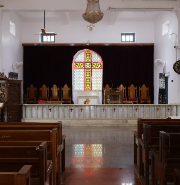
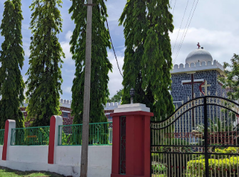

About St. Paul's Church
St. Paul's Methodist Central Church is a historic Christian church located in Bidar, Karnataka. It is part of the Methodist Church in India and represents the Christian heritage of the city.
The church is known as an important place of worship and is connected with the Methodist Christian community in Bidar.
History
Methodism came to India in the 19th century through missionary activities. Methodist churches were established in several Indian cities as the movement expanded.
St. Paul's Methodist Central Church in Bidar is part of this wider Methodist tradition and continues to serve the local Christian community.
Religious & Cultural Significance
The church serves as a place for prayer, worship and community activities. It also reflects the diverse cultural and religious heritage of Bidar.
St. Paul's Church Gallery
Explore the church and its surroundings.



📍 Location
St. Paul's Methodist Central Church, Bidar, Karnataka, India
🗺️ View on Google Maps